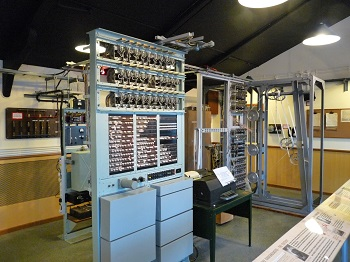
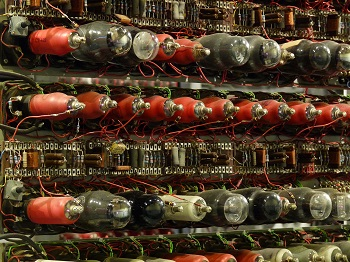
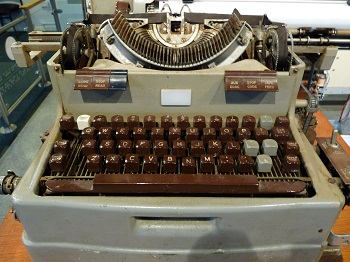

I was totally inspired by a recent visit to Bletchley Park & The National Museum of Computing it is amazing that in seventy years we've gone from behemoths like the Colossus to mobile marvels like the smartphone

Colossus

Close up of the valves

Colossus' Keyboard